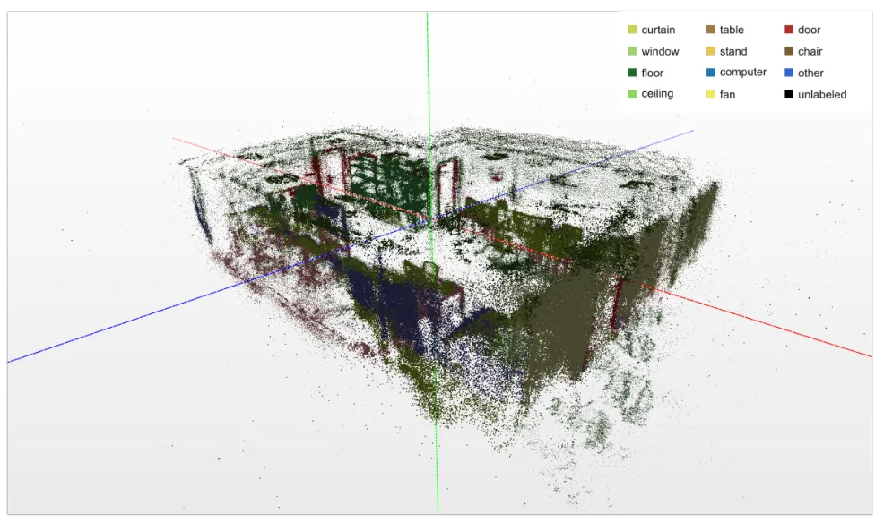
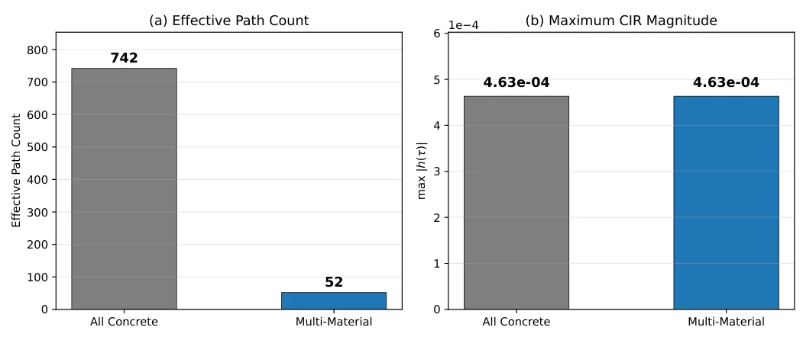
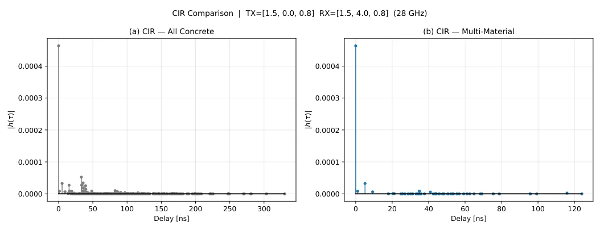
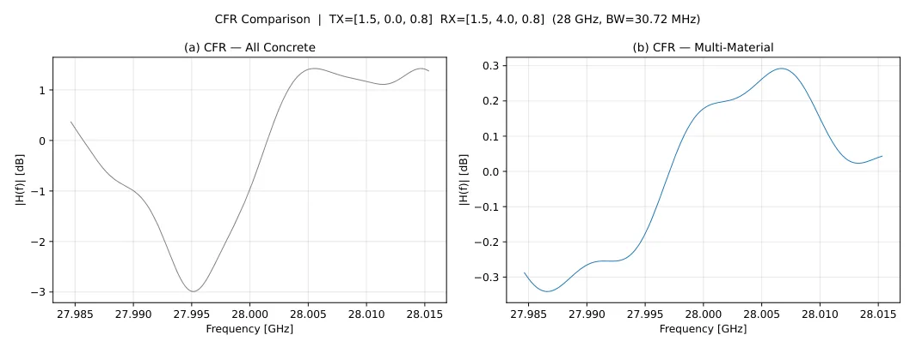
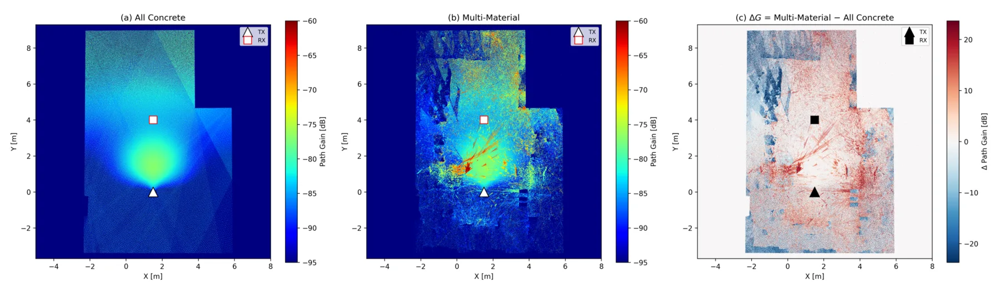
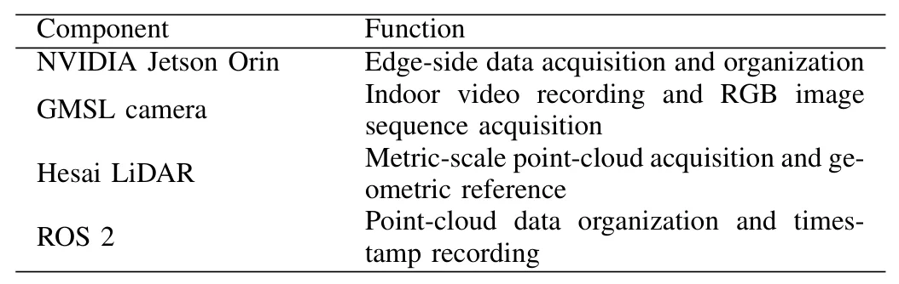

RFDT-Channel：基于 RGB-LiDAR 的 28GHz 室内射频数字孪生场景构建RFDT-Channel: RGB-LiDAR-Based RF Digital Twin Scene Construction for 28 GHz Indoor Ray-Tracing Channel Simulation
虽然目标是射频信道仿真，但其 RGB-LiDAR/3DGS/COLMAP 重建链路与三维数字孪生相关。
一句话工作总结
将 RGB-LiDAR、COLMAP、3DGS/SuGaR 和语义材料绑定串成室内 RF 数字孪生建模流程。
摘要
RFDT-Channel 面向室内毫米波 ray-tracing 仿真中的场景建模效率和材料绑定问题，使用 Jetson Orin 平台采集 RGB 视频与 LiDAR 点云，通过 COLMAP、3D Gaussian Splatting 和 SuGaR 生成初始三角网格，再用 LiDAR 提供几何与尺度参考，在 Blender 中进行 RF-oriented 规则化和拓扑修复，最后用 OpenScene 分割绑定材料并在 Sionna RT 中进行 28 GHz ray tracing。
Real-scene indoor millimeter-wave simulation requires efficient modeling of radio frequency (RF)-computable geometry and electromagnetic material properties. To address the low efficiency of manual scene modeling, the limited RF adaptability of visually reconstructed meshes, and the lack of material binding in 28 GHz ray-tracing simulation, RFDT-Channel is developed as an RF digital twin scene construction workflow based on red-green-blue (RGB) images and light detection and ranging (LiDAR) point clouds. Indoor videos and point clouds are collected by a Jetson Orin platform with LiDAR and GMSL cameras. An initial triangular mesh is generated through COLMAP, 3D Gaussian Splatting, and SuGaR. The LiDAR point cloud then provides geometric and scale references for RF-oriented regularization in Blender, including alignment, wall solidification, door/window opening construction, and topology repair. OpenScene semantic segmentation maps major indoor structures to concrete, glass, wood, and metal materials, and Sionna RT performs 28 GHz ray tracing. Under a fixed transmitter-receiver deployment, the generated channel impulse response (CIR), channel frequency response (CFR), and Radio Map results show that material binding mainly changes weak reflection, transmission, and scattering paths, reducing the number of effective paths from about 742 to about 52 while keeping the dominant path amplitude nearly unchanged.
中文解读摘录
图表/页面预览

{kind=link}

{kind=link}

{kind=link}

{kind=link}

{kind=link}

{kind=link}
